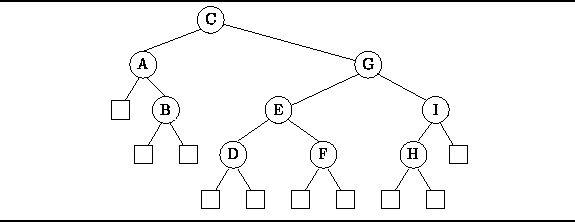

Data Structures and Algorithms
with Object-Oriented Design Patterns in C++
Data Structures and Algorithms
with Object-Oriented Design Patterns in C++Just as the binary tree is an important category of N-ary trees, the binary search tree is an important category of M-way search trees.
Definition (Binary Search Tree) A binary search tree T is a finite set of keys. Either the set is empty,; or the set consists of a root r and exactly two binary search trees
and
,
, such that the following properties are satisfied:
- All the keys contained in left subtree,
- All the keys contained in the right subtree,
Figure  shows an example of a binary search tree.
In this case, since the nodes of the tree carry alphabetic
rather than numeric keys,
the ordering of the keys is alphabetic.
I.e., all the keys in the left subtree of a given node
precede alphabetically the root of the that node,
and all the keys in the right subtree of a given node
follow alphabetically the root of that node.
The empty trees are shown explicitly as boxes in Figure .
However, in order to simplify the graphical representation,
the empty trees are often omitted from the diagrams.
shows an example of a binary search tree.
In this case, since the nodes of the tree carry alphabetic
rather than numeric keys,
the ordering of the keys is alphabetic.
I.e., all the keys in the left subtree of a given node
precede alphabetically the root of the that node,
and all the keys in the right subtree of a given node
follow alphabetically the root of that node.
The empty trees are shown explicitly as boxes in Figure .
However, in order to simplify the graphical representation,
the empty trees are often omitted from the diagrams.

Figure: A Binary Search Tree
 Copyright © 1997 by Bruno R. Preiss, P.Eng. All rights reserved.
Copyright © 1997 by Bruno R. Preiss, P.Eng. All rights reserved.